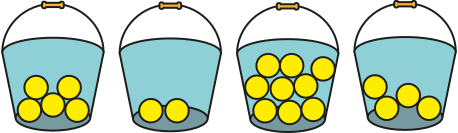

Activité Introduction
-
On dispose de 4 seaux contenant chacun un nombre de balle différent.

- Combien de balle au total y-a-t-il dans les 4 seaux ?
- On souhaite répartir ces balles équitablement, combien de balle doit-on mettre dans chaque seau ?
-
On dispose désormais de 25 seaux dont le nombre de balle est donné dans ce tableau :
| Nombre de balles |
1 |
2 |
6 |
7 |
8 |
10 |
12 |
Total |
| Nombres de seaux |
3 |
2 |
5 |
4 |
3 |
5 |
3 |
25 |
- Combien de balle au total y-a-t-il dans les 25 seaux ?
- On souhaite répartir ces balles équitablement, combien de balle doit-on mettre dans chaque seau ?
Moyenne simple :
La moyenne d'une série de valeurs est égale à la somme de toutes
les valeurs de la série, divisée par l'effectif total de la série.
$Moyenne = \frac{Somme\thinspace de\thinspace toutes\thinspace les\thinspace valeurs}{Effectif\thinspace total}$
Exemple :
On a relevé les notes des 7 derniers contrôles de Pierre :
On peut alors calculer sa moyenne :
$Moyenne = \frac{7+17+15+16+12+14+10}{7}=13$
Interprétation :
Si pierre avait eu la même note à tous les contrôle il aurait eu 13 à chaque fois.
Remarque :
- La moyenne est très sensible au valeurs extrême.
Moyenne pondérée :
On étudie les résultats d'une classe à un contrôle, voici les notes obtenues :
7
13
10
14
14
15
7
10
15
10
13
20
9
9
13
14
15
14
7
10
On range alors ces notes dans le tableau suivant :
Note
(valeur) |
7 |
9 |
10 |
13 |
14 |
15 |
20 |
Total |
| Effectif |
3 |
2 |
4 |
3 |
4 |
3 |
1 |
20 |
Pour calculer la moyenne on calcul la somme des valeurs en prenant en compte leurs effectifs.
La valeur 7 apparait par exemple 3 fois donc on prend 7×3.
Enfin, on divise par l'effectif total, ici 20.
$Moyenne = \frac{7\times3+9\times2+10\times4+13\times3+14\times4+15\times3+20\times1}{20}$ $=11.95$
Remarque :
- Lorsque l'on calcul la moyenne avec des effectifs, on parle de moyenne pondérée.